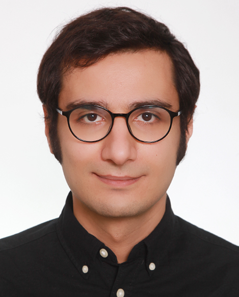

Current focus
PhD candidate (2022–2027)
Hermann-Rietschel-Institut (HRI), TU Berlin
Domain: AI and Energy
Thesis: Building Energy Demand Forecast using Mixture of Experts
I work on machine learning, large language models, smart-building systems, and data-driven energy methods. My research focuses on forecasting, generative models, explainable AI, and intelligent systems for more efficient, comfortable, and human-centric buildings.

I am a PhD Candidate in AI and Energy at the Hermann-Rietschel-Institut (HRI), TU Berlin, and I work as a Data Scientist & AI Researcher across HRI and DAI-Labor. My current work sits at the intersection of machine learning, energy systems, LLMs, IoT, and intelligent indoor environments.
Hermann-Rietschel-Institut (HRI), TU Berlin
Domain: AI and Energy
Thesis: Building Energy Demand Forecast using Mixture of Experts
DAI-Labor & HRI, TU Berlin
LLMs, ML/DL, recommender systems, interactive spaces, IoT, smart buildings, and energy management.
A compact overview of the themes that connect my academic and applied work.
Heat-load forecasting, multi-step prediction, transfer learning, and mixture-of-experts models.
Time seriesTransformersMoEInterpretability for building-energy models with SHAP-based and attention-based explanations.
XAISHAPInterpretabilityQuestion generation, subjective reasoning, language-model evaluation, and human-centered AI interfaces.
LLMsNLPIRInteractive spaces, IoT middleware, smart building infrastructure, and digital assistants in the built environment.
IoTSmart BuildingsEdge SystemsFrom FPGA and embedded systems to computer vision, IoT, data science, and AI research.
Working across AI research and applied intelligent systems with a focus on LLMs, ML/DL, recommender systems, interactive spaces, IoT, smart buildings, and energy management.
Worked on IoT solutions for smart buildings and elevators, combining application logic, firmware-adjacent work, and cloud-based workflows.
Built data-science components for phone-based photoplethysmography (PPG) and heart-rate variability analysis.
Researched machine-learning-based Bluetooth direction finding for indoor environments.
Worked in embedded systems and FPGA-related technical documentation.
Developed a safety-area determination pipeline using ToF cameras in an embedded/computer-vision setting.
Worked on remote system update mechanisms for Xilinx 7-series FPGA systems.
Implemented LSTM-related work on Zynq UltraScale+ MPSoC platforms.
Selected projects from recent research and applied development work.
Sustainable Processes of Urban-Rural Transformations. Publicly connected to the research collaboration behind the Opinerium work on subjective question generation.
Project context around practical AI transfer and outreach, including DAI-Labor participation and public presentations.
Competence center for digital solutions in care, including digital support systems for care in the home environment and interactive demonstrators.
Development of machine-learning-based control and optimization for efficient and grid-supportive operation of regenerative energy systems.
Data-driven and model-based methods for automatic commissioning and monitoring of air-handling systems under realistic operating conditions.
Public repositories that reflect the hardware, machine-learning, and algorithmic side of the portfolio.
Selected publications and preprints, newest first. You can add or remove items easily by duplicating a publication block below.
Teaching, supervision, and the academic path behind the portfolio.
Main lecturer at TU Berlin.
WiSe 2022SoSe 2023WiSe 2023SoSe 2024Master course, group supervision at TU Berlin.
SoSe 2023SoSe 2024Teaching Assistant at Shahid Beheshti University, Tehran.
SoSe 2015Energy, Comfort and Health in Buildings
Hermann-Rietschel-Institut, TU Berlin, Berlin, Germany
Thesis: Building Energy Demand Forecast using Mixture of Experts
Information System and Machine Learning Lab
University of Hildesheim, Hildesheim, Germany
Thesis: Machine Learning-based Bluetooth Direction Finding for Indoor Environments
Department of Computer Sciences and Engineering
Shahid Beheshti University, Tehran, Iran
Thesis: ASIC implementation of Automatic Gamma Correction based on Average of Brightness
“Towards intelligent, sustainable and human-centric buildings.”
If you want to collaborate on AI research, energy forecasting, smart-building systems, LLM applications, or applied data-science work, feel free to reach out.
Python, C/C++, JavaScript, Java, TensorFlow, PyTorch, scikit-learn, GPT, Gemini, LLaMA, OpenAI, LangChain, Hugging Face, Flask, FastAPI, Docker, Kubernetes, AWS, GCP, SQLite, MongoDB, Redis, Solr, Arduino, Raspberry Pi, ESP32, ZigBee, BLE, UWB, VHDL, Verilog.